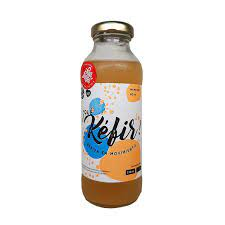
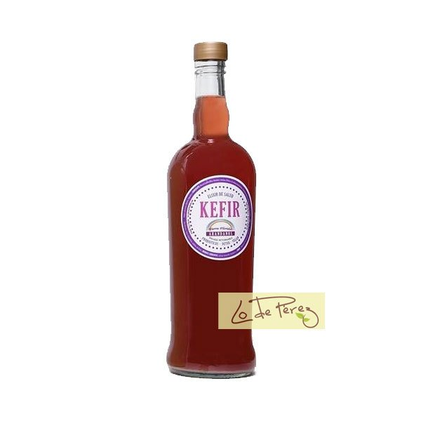
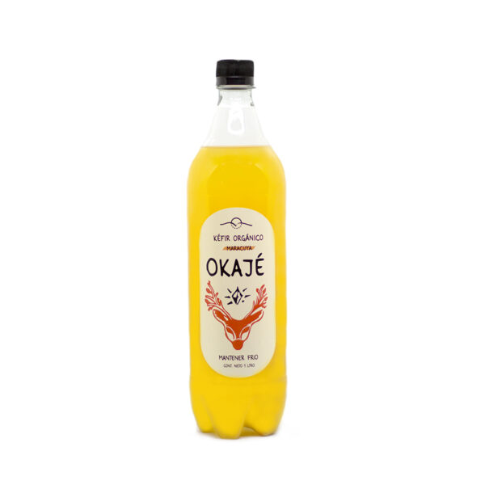
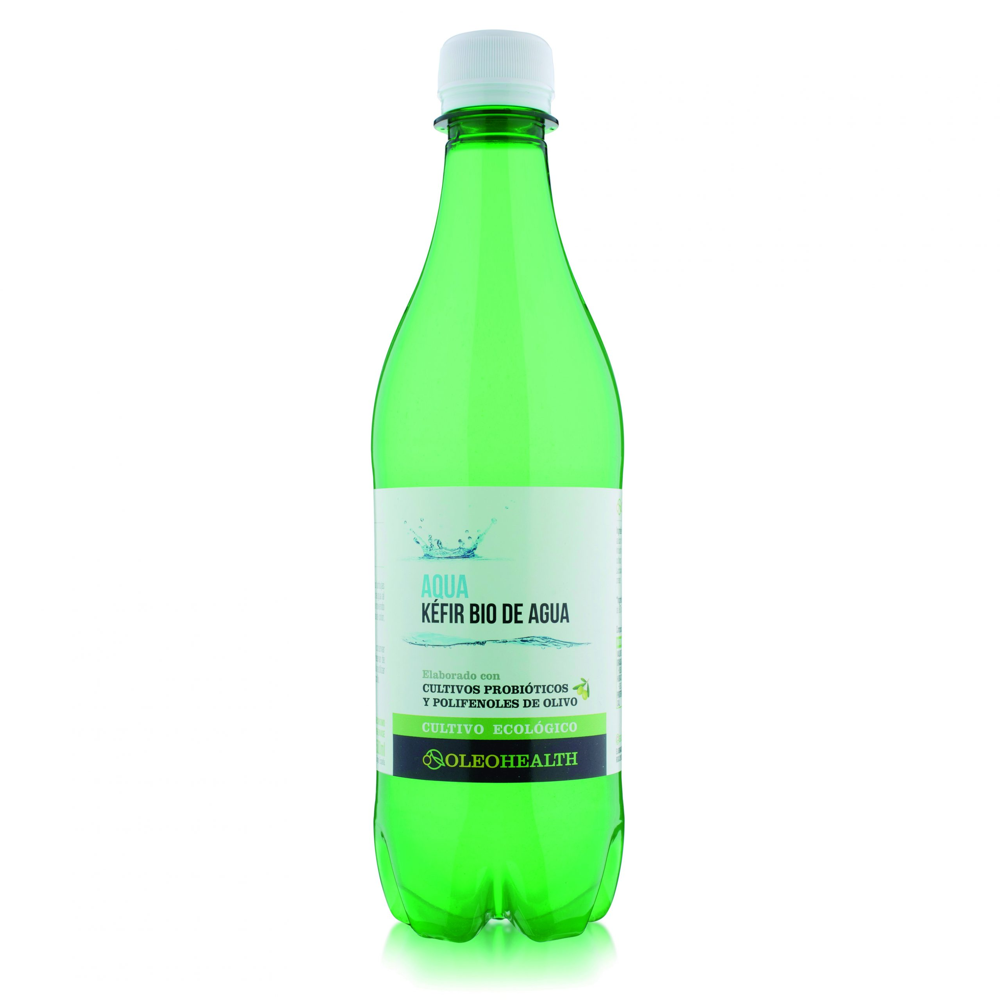
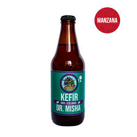
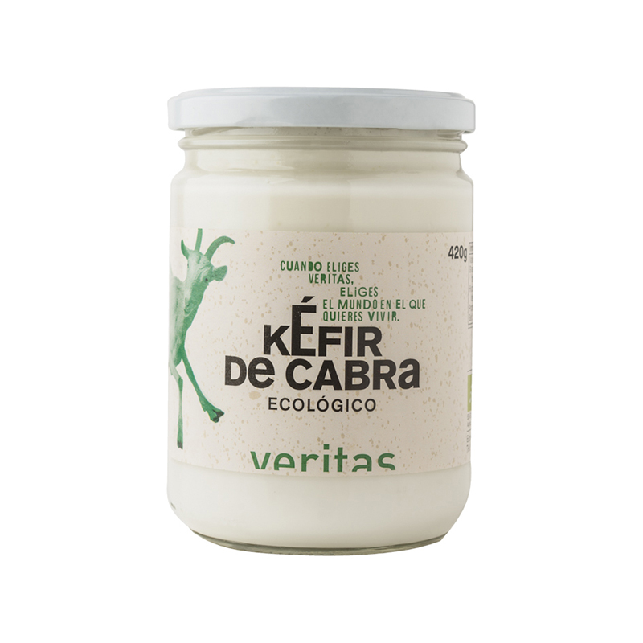

Kefir de Naranja

QUÉ KEFIR
- Bebida probiótica regeneradora de la flora intestinal y reguladora del sistema digestivo.
- Envase de vidrio.
- Proceso artesanal, sin olorantes ni conservantes, saborizantes, etc.
- Es apto veganos, apto celíacos y apto ALPV.
- 910 ml
Kefir de Arándanos

LO DE PÉREZ
- Ingredientes: agua mineral, nódulos de kefir, stevia, azúcar.
- Es apto veganos, apto celíacos y apto ALPV.
- 1 litro.
Kefir de Mandarina

OJAKE
- Podes elegir entre tres variedades: mandarina, limón y jengibre, pomelo rosado o maracuya!
- Aporta millones de bacterias beneficas para tu salud, manteniendo tu microbiota en equilibrio.
- Es apto veganos, apto celíacos.
- 1 litro.
Kefir de agua y oliva

OLEOHEALTH
- Kéfir de agua Oleohealth® y polifenoles de olivo BIO.
- Se elabora gracias a la fermentación del cultivo vivo de kéfir de agua combinado con una infusión de polifenoles del olivo.
- Es apto veganos, apto celíacos.
- 500 ml.
Kefir de Manzana

DR. MISHA
- Gracias a un proceso de doble fermentación obtienen el sabor de las manzanas que la hacen una bebida saludable y riquísima.
- Todos los insumos de esta bebida provienen de agricultura ecológica.
- Combate males digestivos como la gastritis, estreñimiento y reflujo.
- 330 ml.
Kefir de cabra

VERITAS
- Ingredientes: Leche pasteurizada de cabra*, hongo de Kéfir. (*procedente de la agricultura ecológica, origen de la leche España).
- Alérgenos: Contiene leche.
- Conservación y transporte: 2 a 6ª
- 420 gr.